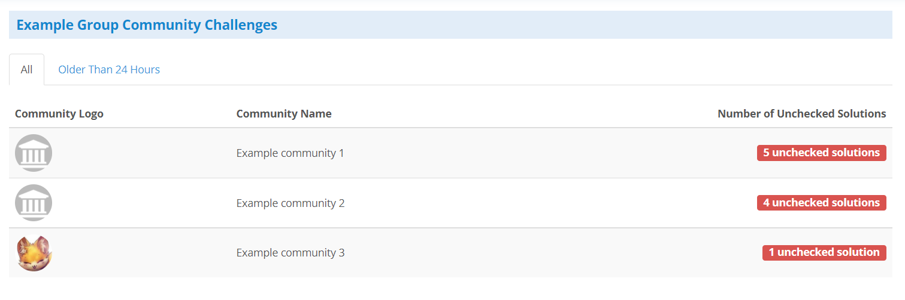
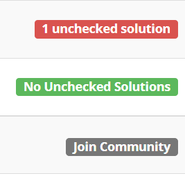

Overview
In a school community group, this page will list every community that exists within the community group, and will look similar to this:

This is a simple page designed to help in getting a general idea of which communities currently have the most unchecked solutions. You may click on any of the communities listed to immediately jump to that specific community's challenge admin page.
Types of Labels
The all tab specifically has three different labels each community can have. They are:
- Number of Unchecked Solutions
- No Solutions to Check
- Community not Joined
- If you click on one of these not joined communities, the dashboard will attempt to bring you to that community's join page, if this community allows membership applications
